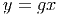
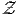
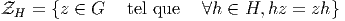

2.3 Actions de groupes et représentations
2.3.1 Généralités
L’étude des groupes pour eux-mêmes ne devrait pas nous faire oublier un fait
essentiel : un groupe sert surtout à agir sur “quelque chose”. Historiquement,
d’ailleurs, on définissait le plus souvent les groupes comme “groupes de
transformations”, pour s’apercevoir, après coup, du fait que deux groupes de
transformations pouvant sembler très différents de prime abord, ne constituaient,
en fait, qu’un seul et même groupe “abstrait”, agissant de deux façons différentes
sur deux espaces différents. Pour préciser cette notion d’action ainsi que pour
décrire la façon dont un groupe G agit sur un ensemble M, il est utile d’introduire
un vocabulaire approprié.
2.3.2 Groupe G opérant à gauche sur un ensemble E
A tout élément g de G et à tout élément x (on dira “point”) de E, on associe un
point y de E qu’on appelera image de x par la transformation g. On
écrira

On veut que (g1g2)x = g1(g2x) afin de pouvoir oublier les parenthèses.
Plus précisément, une action (à gauche) de G sur E est la donnée d’un
homomorphisme L du groupe G dans le groupe des substitutions de E (l’ensemble
des bijections de E dans E). L’image de g ∈ G est noté Lg. L’application Lg est
donc une bijection de E dans lui-même. Puisque L est un homomorphisme, on a
Lg1g2 = Lg1Lg2. Par abus de langage, il est d’usage de noter y = gx au
lieu de y = Lg(x). Le lecteur aura compris que le symbole L vient de
Left.
Pour définir une action quelconque, nous avons simplement supposé que Lg
était une bijection, mais on peut contraindre davantage la situation en imposant à
Lg d’être un homéomorphisme (E étant alors supposé muni d’une topologie), un
difféomorphisme (E étant une variété différentiable), etc . On parle alors
d’action continue, différentiable, etc .
2.3.3 Action à droite (anti-action)
On dit que G agit à droite sur E si on se donne un anti-homomorphisme R de G
dans l’ensemble des substitutions de E. En d’autres termes, on remplace la
condition Lg1g2 = Lg1Lg2 par la condition Rg1g2 = Rg2Rg1. Une action
à droite n’est donc pas une action, au sens strict du terme, mais une
anti-action. De façon à pouvoir se débarrasser du symbole R, mis pour
Right, on notera y = xg au lieu de y = Rg(x). L’écriture de g, à droite
de x permet de composer correctement les transformations sans qu’il
y ait besoin de parenthèses : Rg1g2(x) = Rg2Rg1(x) implique en effet
x(g1g2) = (xg1)g2.
2.3.4 Passage de la droite à la gauche (et inversement)
Supposons donnée une action à droite R de G sur E ; on peut canoniquement
lui associer une action à gauche L en définissant Lgx = Rg-1x ; c’est à dire
encore, avec des notations plus dépouillées, gx = xg-1. On peut ainsi toujours
passer de la droite à la gauche et inversement. Cela dit, il est, quelquefois,
dangereux d’effectuer ce passage sans notations protectrices… En effet,
prenons par exemple E = G lui-même ; on n’a alors certainement pas
g.k = k.g-1 dans le groupe G ! Une telle expression devrait donc s’écrire
g × k = k.g-1 et s’interpréterait, non comme une égalité dans G mais
comme une expression définissant, à partir de la multiplication “.” une
nouvelle multiplication “×” (qu’on appelle dailleurs la “multiplication
opposée”).
2.3.5 Orbites, espace quotient
- Soit G un groupe opérant à gauche sur E. L’orbite Gx de x ∈ E est
l’ensemble
 On peut ainsi passer d’un point à un autre de la même orbite en
utilisant un élément du groupe G.
On peut ainsi passer d’un point à un autre de la même orbite en
utilisant un élément du groupe G.
- Le fait, pour deux points x et y, d’appartenir à la même orbite
est clairement une relation d’équivalence (utilisant l’existence d’un
élément neutre, l’existence, pour tout g, d’un inverse g-1, et le fait
que la loi de groupe soit interne). L’ensemble quotient n’est autre que
l’ensemble des différentes orbites x = Gx et se note G\E pour une
action à gauche. L’ensemble quotient pour une action à droite (les
classes sont alors les orbites x = xG) se note E∕G.
2.3.6 Efficacité
- L’action de G sur E est dite fidèle, efficace, ou effective (“effective
or faithful action”) lorsque tous les éléments de G (hormis l’élément
neutre) font effectivement quelque chose ! On considère le fait de
ne rien faire comme une action particulière peu efficace… L’adjectif
“efficace” est assez parlant, mais il semble que le mot “fidèle” soit
maintenant généralement utilisé pour désigner cette notion. Pour une
action donnée du groupe G sur l’ensemble E, on définit l’ensemble I
des éléments de G qui n’agissent sur aucun des éléments de E, c’est
à dire
 Cet ensemble I est manifestement un sous-groupe de G (on pourrait
l’appeler le sous-groupe des feignants ! ) et il caractérise l’efficacité
de l’action du groupe G. Plus il y a de feignants, moins l’action est
efficace. Lorsque I se réduit à l’élément neutre de G, on dit que
l’action est fidèle. Lorsque I coïncide avec G, l’action est triviale.
Cet ensemble I est manifestement un sous-groupe de G (on pourrait
l’appeler le sous-groupe des feignants ! ) et il caractérise l’efficacité
de l’action du groupe G. Plus il y a de feignants, moins l’action est
efficace. Lorsque I se réduit à l’élément neutre de G, on dit que
l’action est fidèle. Lorsque I coïncide avec G, l’action est triviale.
- Manifestement, seules les actions fidèles sont intéressantes. Pour cette
raison, il est utile, lorsqu’on se donne une action non- fidèle de G sur
E, de fabriquer un nouveau groupe G|I pour lequel l’action est fidèle.
Noter que G|I est bien un groupe car I est distingué dans G (en effet
gI(g-1x) = gg-1x = x donc gIg-1 = I).
2.3.7 Liberté et stabilisateur
- On suppose donnée une action fidèle du groupe G sur l’ensemble E.
Puisque l’action est fidèle, tous les éléments de G – sauf l’élément
neutre – “font quelque chose”. Cependant, il peut se faire que, pour
un point particulier x ∈ E, il existe des éléments de G laissant ce
point invariant. On définit ainsi le stabilisateur Hx de x ∈ E :
 Il est facile de voir que Hx est un sous-groupe de G. Noter la différence
entre la définition de Hx et celle de I donnée dans le paragraphe
précédent : la définition de Hx dépend a priori de x ! Le stabilisateur
de x est quelquefois dénommé (historiquement, dans le contexte de
l’action du groupe de Lorentz sur l’espace de Minkowski de la théorie
de la Relativité Restreinte) petit groupe de x . Le stabilisateur Hx de
x est aussi appelé sous-groupe d’isotropie de x ∈ E.
Il est facile de voir que Hx est un sous-groupe de G. Noter la différence
entre la définition de Hx et celle de I donnée dans le paragraphe
précédent : la définition de Hx dépend a priori de x ! Le stabilisateur
de x est quelquefois dénommé (historiquement, dans le contexte de
l’action du groupe de Lorentz sur l’espace de Minkowski de la théorie
de la Relativité Restreinte) petit groupe de x . Le stabilisateur Hx de
x est aussi appelé sous-groupe d’isotropie de x ∈ E.
- Deux points appartenant à la même orbite ont des stabilisateurs
conjugués. En effet, soit y = gx, alors l’hypothèse Hxx = x implique
Hxg-1y = g-1y. Ceci montre que H
y = gHxg-1. Notons que H
x et
Hy, bien qu’isomorphes, sont en général distincts comme sous-groupes
de G (Hx n’est généralement pas distingué dans G).
- Il existe une bijection entre les points de l’orbite x = Gx de x et les
points de l’ensemble quotient G∕Hx : à y = gx on associe l’élément
gHx de G∕Hx et réciproquement. On assimile souvent l’orbite Gx de
x à l’ensemble quotient G∕H où H désigne le stabilisateur d’un point
quelconque de l’orbite, mais il faut se rappeler que, précisément, cette
identification n’est possible que si on a choisi un point. En d’autres
termes, la bijection entre les deux ensembles n’est pas canonique
puisqu’elle dépend du point x choisi. Cette remarque (le fait qu’une
telle bijection ne soit pas canonique) est à la base de l’idée d’invariance
de jauge, qui, elle-même, est à la base de pratiquement toutes nos
théories physiques. Nous y reviendrons avec force détails dans le
chapitre consacré aux espaces fibrés, puis dans celui consacré aux
connexions.
- Il peut se faire que, pour tout point x de E, le stabilisateur Hx se
réduise à l’identité. Dans ce cas l’action est dite libre. Le résultat
précédent montre alors que, dans un tel cas, chaque orbite est
identifiable à G lui-même. Cette situation est à la base de la théorie
des espaces fibrés principaux (chapitre suivant).
- Notons que liberté implique efficacité …
2.3.8 Transitivité
L’action de G sur E est dite transitive s’il n’existe qu’une seule orbite, en d’autres
termes, s’il est possible de passer de n’importe quel point de E à n’importe quel
autre point à l’aide d’un élément de G.
2.3.9 Action d’un sous-groupe H sur un groupe G, normalisateur,
centralisateur
- Le cas particulier où E = G et où on considère donc l’action de
G sur lui-même par multiplication – à gauche ou à droite – mérite
évidemment une mention spéciale. Il s’agit alors d’une action fidèle,
libre et transitive ; nous y reviendrons un peu plus loin car elle
permet de donner une définition intrinsèque de la notion d’algèbre de
Lie.
- Choisissons maintenant un sous-groupe H de G. On peut alors définir
une action à gauche de H sur G (les orbites sont les g = Hg, c’est
à dire les classes de H\G) et une action à droite de H sur G (les
orbites sont les g = gH, c’est à dire les classes de G∕H). En général,
les ensembles quotients G∕H et H\G ne sont pas des groupes, sauf
dans le cas où les classes à gauche et à droite coïncident (gH = Hg),
c’est à dire lorsque H est distingué dans G (on dit aussi dans ce cas
que H est un sous-groupe invariant ou un sous-groupe normal). En
effet, on peut alors définir de façon non ambiguŒ la multiplication
des classes : gk = gHkH = gkH = gk.
- Soit H ⊂ G. On définit le normalisateur N de H dans G comme le
plus grand sous-groupe de G dans lequel H est normal.
 Par construction H est distingué dans N, donc N|H est un groupe,
et si H est un sous-groupe distingué de G, alors N = G. Notons que,
dans un groupe abélien, tout sous-groupe est distingué.
Par construction H est distingué dans N, donc N|H est un groupe,
et si H est un sous-groupe distingué de G, alors N = G. Notons que,
dans un groupe abélien, tout sous-groupe est distingué.
- Il faut distinguer (précisément !) les notions de normalisateur et de
centralisateur. Le centralisateur H de H dans G est l’ensemble des
éléments de G qui commutent (élément par élément) avec ceux de
H :
 Le centralisateur de H dans G (que nous notons également H
pour préciser) est bien évidemment un sous-groupe – non nécessairement
abélien – de G. Il nous faut également rappeler la définition du
centre d’un groupe G qui n’est autre que le centralisateur de G dans
lui-même. Bien entendu, le sous-groupe H possède lui-même son propre
centre CH et on a CH ⊂ ZH.
2.3.10 Stratification
Dans toute cette sous-section on considère un groupe G agissant sur E de façon
fidèle.
- On sait que si deux points appartiennent à la même orbite, leurs
stabilisateurs sont conjugués, mais il peut se faire qu’ils coïncident.
Cela arrivera si Hy=gx = Hx c’est à dire si gHxg-1 = H
x, c’est à dire
si g appartient au normalisateur de Hx dans G.
- Ce n’est pas parce que les stabilisateurs de Hx1 et de Hx2 sont
conjugués qu’ils appartiennent nécessairement à la même orbite.
Par contre, et par définition, on dit alors qu’ils appartiennent à la
même strate. Ainsi, une strate donnée est caractérisée par un certain
sous-groupe H de G défini à isomorphisme près. On dira que deux
orbites sont du même type si les stabilisateurs des différents points
sont isomorphes. Une strate est donc la réunion de toutes les orbites
d’un même type.
- On peut ainsi décomposer E en une réunion de strates EH, chaque
strate étant caractérisée par un certain type de stabilisateur H. On
peut également décomposer l’espace des orbites G\E en une réunion
d’ensembles G\EH. Lorsque E est muni d’une topologie, on démontre
que l’une de ces strates (dite la strate générique) est ouverte et
dense dans E ; le groupe d’isotropie correspondant (le stabilisateur
générique) est le plus petit possible.
2.3.11 Remarques
Afin de se familiariser avec les concepts qui précèdent ainsi qu’avec la
terminologie correspondante, nous suggérons très fortement au lecteur de revoir
toute la géométrie élémentaire (celle étudiée dans les classes secondaires) en ces
termes, c’est à dire en utilisant l’action des groupes de translations, rotations,
homothéties, etc . Il pourra être également extrêmement utile de revoir la
cinématique classique (puis la cinématique relativiste) sous cet angle, en étudiant
l’action du groupe Euclidien, celle du groupe de Galilée, du groupe de Lorentz
etc .